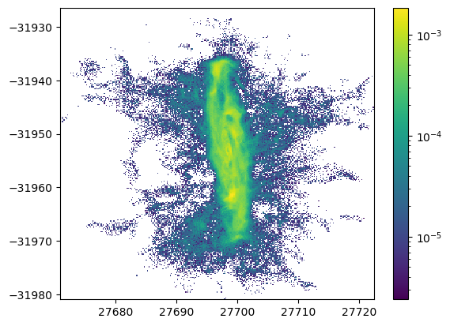
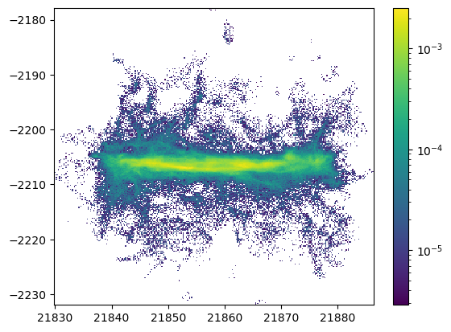

The following modules installed.
- import illustris_python as il
- import numpy as np
- import pandas as pd
- import os
- import matplotlib.pyplot as plt
- from matplotlib.colors import LogNorm
- import glob
['cut_data/subhalo342447_data.npz',
'cut_data/subhalo372754_data.npz',
'cut_data/subhalo372755_data.npz',
'cut_data/subhalo388544_data.npz',
'cut_data/subhalo392277_data.npz',
'cut_data/subhalo400974_data.npz',
'cut_data/subhalo402555_data.npz',
'cut_data/subhalo411449_data.npz',
'cut_data/subhalo414917_data.npz',
'cut_data/subhalo419618_data.npz',
'cut_data/subhalo421555_data.npz',
'cut_data/subhalo422754_data.npz',
'cut_data/subhalo424288_data.npz',
'cut_data/subhalo425719_data.npz',
'cut_data/subhalo427211_data.npz',
'cut_data/subhalo428177_data.npz',
'cut_data/subhalo430864_data.npz',
'cut_data/subhalo432106_data.npz',
'cut_data/subhalo433289_data.npz',
'cut_data/subhalo435752_data.npz',
'cut_data/subhalo436932_data.npz',
'cut_data/subhalo438148_data.npz',
'cut_data/subhalo439099_data.npz',
'cut_data/subhalo440407_data.npz',
'cut_data/subhalo441709_data.npz',
'cut_data/subhalo443049_data.npz',
'cut_data/subhalo445626_data.npz',
'cut_data/subhalo446665_data.npz',
'cut_data/subhalo448830_data.npz',
'cut_data/subhalo452031_data.npz',
'cut_data/subhalo452978_data.npz',
'cut_data/subhalo454171_data.npz',
'cut_data/subhalo456326_data.npz',
'cut_data/subhalo458470_data.npz',
'cut_data/subhalo459557_data.npz',
'cut_data/subhalo461785_data.npz',
'cut_data/subhalo462710_data.npz',
'cut_data/subhalo464163_data.npz',
'cut_data/subhalo465255_data.npz',
'cut_data/subhalo467415_data.npz',
'cut_data/subhalo468590_data.npz',
'cut_data/subhalo469487_data.npz',
'cut_data/subhalo470345_data.npz',
'cut_data/subhalo471996_data.npz',
'cut_data/subhalo472548_data.npz',
'cut_data/subhalo473329_data.npz',
'cut_data/subhalo474008_data.npz',
'cut_data/subhalo475016_data.npz',
'cut_data/subhalo476266_data.npz',
'cut_data/subhalo477328_data.npz',
'cut_data/subhalo478216_data.npz',
'cut_data/subhalo479290_data.npz',
'cut_data/subhalo479938_data.npz',
'cut_data/subhalo482889_data.npz',
'cut_data/subhalo485056_data.npz',
'cut_data/subhalo488530_data.npz',
'cut_data/subhalo489206_data.npz',
'cut_data/subhalo490079_data.npz',
'cut_data/subhalo490814_data.npz',
'cut_data/subhalo491426_data.npz',
'cut_data/subhalo492876_data.npz',
'cut_data/subhalo493433_data.npz',
'cut_data/subhalo494011_data.npz',
'cut_data/subhalo494709_data.npz',
'cut_data/subhalo496186_data.npz',
'cut_data/subhalo497557_data.npz',
'cut_data/subhalo499704_data.npz',
'cut_data/subhalo500577_data.npz',
'cut_data/subhalo501725_data.npz',
'cut_data/subhalo502371_data.npz',
'cut_data/subhalo502995_data.npz',
'cut_data/subhalo503437_data.npz',
'cut_data/subhalo503987_data.npz',
'cut_data/subhalo504559_data.npz',
'cut_data/subhalo505100_data.npz',
'cut_data/subhalo505586_data.npz',
'cut_data/subhalo506720_data.npz',
'cut_data/subhalo510585_data.npz',
'cut_data/subhalo514829_data.npz',
'cut_data/subhalo515296_data.npz',
'cut_data/subhalo515695_data.npz',
'cut_data/subhalo517271_data.npz',
'cut_data/subhalo518682_data.npz',
'cut_data/subhalo519311_data.npz',
'cut_data/subhalo520885_data.npz',
'cut_data/subhalo521429_data.npz',
'cut_data/subhalo521803_data.npz',
'cut_data/subhalo522530_data.npz',
'cut_data/subhalo523548_data.npz',
'cut_data/subhalo523889_data.npz',
'cut_data/subhalo528836_data.npz',
'cut_data/subhalo530330_data.npz',
'cut_data/subhalo530852_data.npz',
'cut_data/subhalo531320_data.npz',
'cut_data/subhalo532301_data.npz',
'cut_data/subhalo532760_data.npz',
'cut_data/subhalo534628_data.npz',
'cut_data/subhalo535050_data.npz',
'cut_data/subhalo535410_data.npz',
'cut_data/subhalo539667_data.npz',
'cut_data/subhalo540082_data.npz',
'cut_data/subhalo540920_data.npz',
'cut_data/subhalo541218_data.npz',
'cut_data/subhalo541497_data.npz',
'cut_data/subhalo542252_data.npz',
'cut_data/subhalo542662_data.npz',
'cut_data/subhalo543114_data.npz',
'cut_data/subhalo543376_data.npz',
'cut_data/subhalo544001_data.npz',
'cut_data/subhalo545437_data.npz',
'cut_data/subhalo546474_data.npz',
'cut_data/subhalo546870_data.npz',
'cut_data/subhalo547293_data.npz',
'cut_data/subhalo547844_data.npz',
'cut_data/subhalo550149_data.npz',
'cut_data/subhalo550475_data.npz',
'cut_data/subhalo552414_data.npz',
'cut_data/subhalo553837_data.npz',
'cut_data/subhalo554189_data.npz',
'cut_data/subhalo554798_data.npz',
'cut_data/subhalo555013_data.npz',
'cut_data/subhalo557721_data.npz',
'cut_data/subhalo560751_data.npz',
'cut_data/subhalo563732_data.npz',
'cut_data/subhalo565089_data.npz',
'cut_data/subhalo571454_data.npz',
'cut_data/subhalo572328_data.npz']
subhalo342447_data
/home/nishihama/test_halo/TNG_catcher/TNG_catcher.py:215: FutureWarning: elementwise comparison failed; returning scalar instead, but in the future will perform elementwise comparison
if z in ["Density"]:

977796
Cut data.
400000
/home/nishihama/test_halo/TNG_catcher/TNG_catcher.py:215: FutureWarning: elementwise comparison failed; returning scalar instead, but in the future will perform elementwise comparison
if z in ["Density"]:
/home/nishihama/test_halo/TNG_catcher/TNG_catcher.py:215: FutureWarning: elementwise comparison failed; returning scalar instead, but in the future will perform elementwise comparison
if z in ["Density"]:


/home/nishihama/test_halo/TNG_catcher/TNG_catcher.py:215: FutureWarning: elementwise comparison failed; returning scalar instead, but in the future will perform elementwise comparison
if z in ["Density"]:

/home/nishihama/test_halo/TNG_catcher/TNG_catcher.py:215: FutureWarning: elementwise comparison failed; returning scalar instead, but in the future will perform elementwise comparison
if z in ["Density"]:
/home/nishihama/test_halo/TNG_catcher/TNG_catcher.py:215: FutureWarning: elementwise comparison failed; returning scalar instead, but in the future will perform elementwise comparison
if z in ["Density"]:
array([[ 0.63481612, -0.62870619, -0.44915145],
[-0.15019523, 0.46980595, -0.86989871],
[ 0.75792473, 0.61968613, 0.20381171]])
subhalo372754_data
data = np.load(dd.files_list[1])
test = plot_tools(data)
test.simple_plot("x","y","Masses")
len(test.data["Masses"])
/home/nishihama/test_halo/TNG_catcher/TNG_catcher.py:215: FutureWarning: elementwise comparison failed; returning scalar instead, but in the future will perform elementwise comparison
if z in ["Density"]:
1511969
Cut data.
/home/nishihama/test_halo/TNG_catcher/TNG_catcher.py:215: FutureWarning: elementwise comparison failed; returning scalar instead, but in the future will perform elementwise comparison
if z in ["Density"]:
600000
Cut data.
/home/nishihama/test_halo/TNG_catcher/TNG_catcher.py:215: FutureWarning: elementwise comparison failed; returning scalar instead, but in the future will perform elementwise comparison
if z in ["Density"]:
Cut data.
/home/nishihama/test_halo/TNG_catcher/TNG_catcher.py:215: FutureWarning: elementwise comparison failed; returning scalar instead, but in the future will perform elementwise comparison
if z in ["Density"]:
Cut data.
/home/nishihama/test_halo/TNG_catcher/TNG_catcher.py:215: FutureWarning: elementwise comparison failed; returning scalar instead, but in the future will perform elementwise comparison
if z in ["Density"]:
/home/nishihama/test_halo/TNG_catcher/TNG_catcher.py:215: FutureWarning: elementwise comparison failed; returning scalar instead, but in the future will perform elementwise comparison
if z in ["Density"]:
/home/nishihama/test_halo/TNG_catcher/TNG_catcher.py:215: FutureWarning: elementwise comparison failed; returning scalar instead, but in the future will perform elementwise comparison
if z in ["Density"]:
/home/nishihama/test_halo/TNG_catcher/TNG_catcher.py:215: FutureWarning: elementwise comparison failed; returning scalar instead, but in the future will perform elementwise comparison
if z in ["Density"]:

/home/nishihama/test_halo/TNG_catcher/TNG_catcher.py:215: FutureWarning: elementwise comparison failed; returning scalar instead, but in the future will perform elementwise comparison
if z in ["Density"]:

/home/nishihama/test_halo/TNG_catcher/TNG_catcher.py:215: FutureWarning: elementwise comparison failed; returning scalar instead, but in the future will perform elementwise comparison
if z in ["Density"]:
array([[ 0.99756405, 0. , -0.06975647],
[-0.06737958, -0.25881905, -0.96357288],
[-0.0180543 , 0.96592583, -0.25818857]])
subhalo372755_data
894565
Cut data.
/home/nishihama/test_halo/TNG_catcher/TNG_catcher.py:215: FutureWarning: elementwise comparison failed; returning scalar instead, but in the future will perform elementwise comparison
if z in ["Density"]:
/home/nishihama/test_halo/TNG_catcher/TNG_catcher.py:215: FutureWarning: elementwise comparison failed; returning scalar instead, but in the future will perform elementwise comparison
if z in ["Density"]:

/home/nishihama/test_halo/TNG_catcher/TNG_catcher.py:215: FutureWarning: elementwise comparison failed; returning scalar instead, but in the future will perform elementwise comparison
if z in ["Density"]:
/home/nishihama/test_halo/TNG_catcher/TNG_catcher.py:215: FutureWarning: elementwise comparison failed; returning scalar instead, but in the future will perform elementwise comparison
if z in ["Density"]:
/home/nishihama/test_halo/TNG_catcher/TNG_catcher.py:215: FutureWarning: elementwise comparison failed; returning scalar instead, but in the future will perform elementwise comparison
if z in ["Density"]:

/home/nishihama/test_halo/TNG_catcher/TNG_catcher.py:215: FutureWarning: elementwise comparison failed; returning scalar instead, but in the future will perform elementwise comparison
if z in ["Density"]:

/home/nishihama/test_halo/TNG_catcher/TNG_catcher.py:215: FutureWarning: elementwise comparison failed; returning scalar instead, but in the future will perform elementwise comparison
if z in ["Density"]:
/home/nishihama/test_halo/TNG_catcher/TNG_catcher.py:215: FutureWarning: elementwise comparison failed; returning scalar instead, but in the future will perform elementwise comparison
if z in ["Density"]:
/home/nishihama/test_halo/TNG_catcher/TNG_catcher.py:215: FutureWarning: elementwise comparison failed; returning scalar instead, but in the future will perform elementwise comparison
if z in ["Density"]:
/home/nishihama/test_halo/TNG_catcher/TNG_catcher.py:215: FutureWarning: elementwise comparison failed; returning scalar instead, but in the future will perform elementwise comparison
if z in ["Density"]:
/home/nishihama/test_halo/TNG_catcher/TNG_catcher.py:215: FutureWarning: elementwise comparison failed; returning scalar instead, but in the future will perform elementwise comparison
if z in ["Density"]:
/home/nishihama/test_halo/TNG_catcher/TNG_catcher.py:215: FutureWarning: elementwise comparison failed; returning scalar instead, but in the future will perform elementwise comparison
if z in ["Density"]:
array([[-0.16317591, -0.28488688, 0.94457032],
[-0.05939117, 0.95850252, 0.27882898],
[-0.98480775, -0.01060097, -0.17332429]])